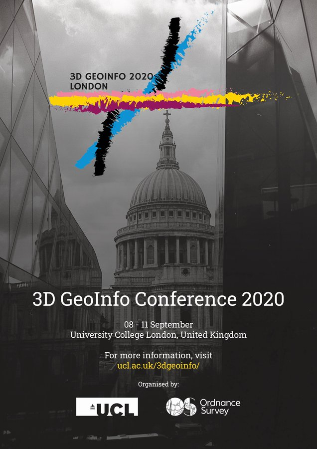
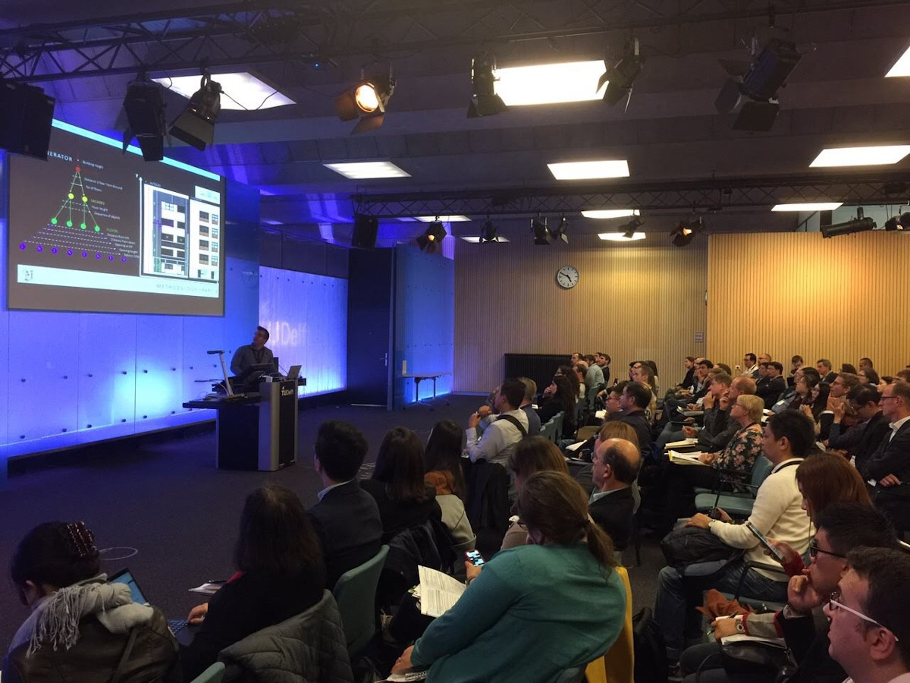

3D GeoInfo Conference 2021
In a year of diminished networking opportunities, 3D GeoInfo offers a forum for leading international decision makers and prominent voices in the field of 3D Geoinformation across the academic, industrial, and public sectors. The conference will take place online on October 11-14, in conjunction with the FIG 3D Cadastres workshop.
Topics
3D GeoInfo addresses advancements in (but not limitted to) the following areas:
- 3D data creation and acquisition
- 3D data processing and analysis
- 3D data management - data quality, metadata, provenance and trust
- Data integration, information fusion, multi-modal data analysis
- 3D visualization, including gamification, virtual reality, augmented reality
- 3D and Artificial Intelligence/Machine Learning
- 3D and Big Data, parallel computing, cloud computing
- 3D city modeling, underground infrastructure modeling, topography, and bathymetry modeling
- Building Information Modeling, Digital Twins, Smart Cities, Smart Infrastructure
- Usability and Human-Computer interaction in 3D GIS
- 3D GIS, spatial analysis and other applications (such as 3D cadastral systems, land administration, utilities, asset management, infrastructure, navigation, urban planning, geology, archaeology, marine systems, simulations, autonomous vehicles, facilities management, energy modeling, disaster and risk management, pandemic monitoring)
Submissions and publications
Contributions can be submitted as full papers, abstract papers, or stand-alone presentations. All contributions should be submitted through EasyChair and will be selected through to a double-blind review process. Submitted contributions must not be published elsewhere.
- Accepted full papers will be published on ISPRS Annals.
- Accepted abstracts, after being extended to short papers, will be published on ISPRS Archives.
- All accepted contributions, including stand-alone presentations, will be presented at the conference.
Important Dates
| Call for full papers and abstracts | Jan 4, 2021 |
| Deadline for full papers and abstracts | Apr 12, 2021 |
| Notification of abstract acceptance | Jun 14, 2021 |
| Notification of full paper acceptance | Jul 16, 2021 |
| Deadline for camera ready papers | Aug 16, 2021 |
| Conference | Oct 11-14, 2021 |
News
-
Article 02
December 2, 2020
Placeholder for an article
-
Article 01
December 1, 2020
Place holder for an article
Past Events
|  |  |
 |
| London 2020 | Singapore 2019 | Delft 2018 |